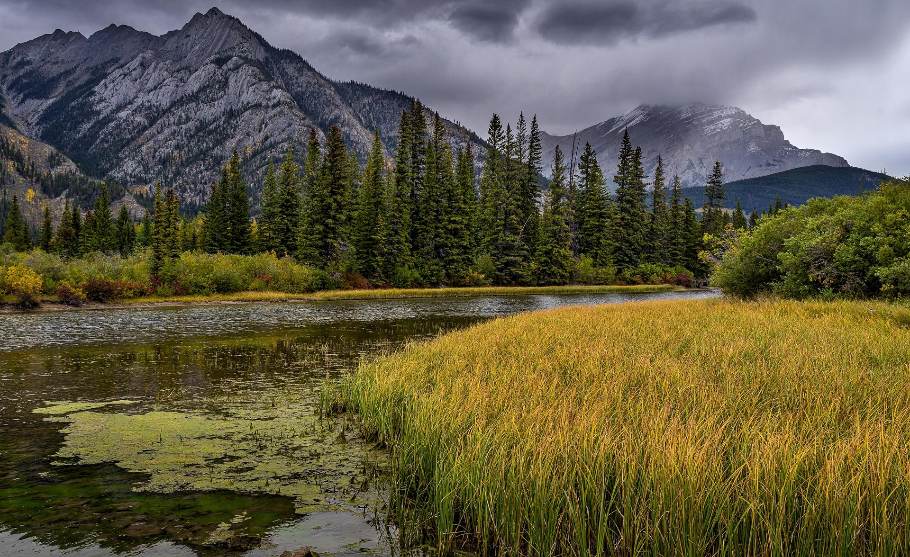
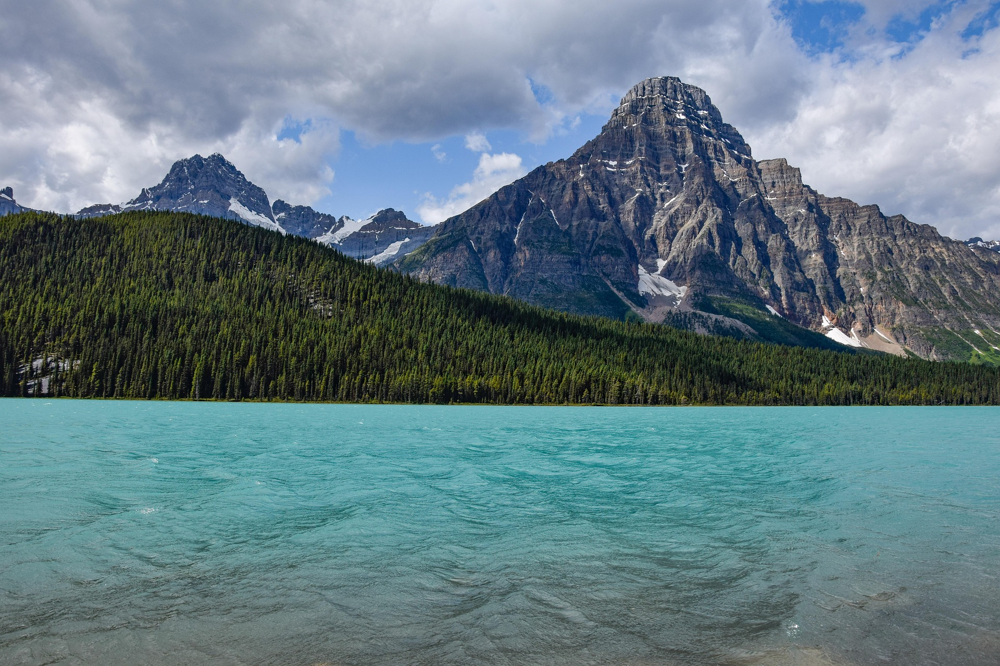
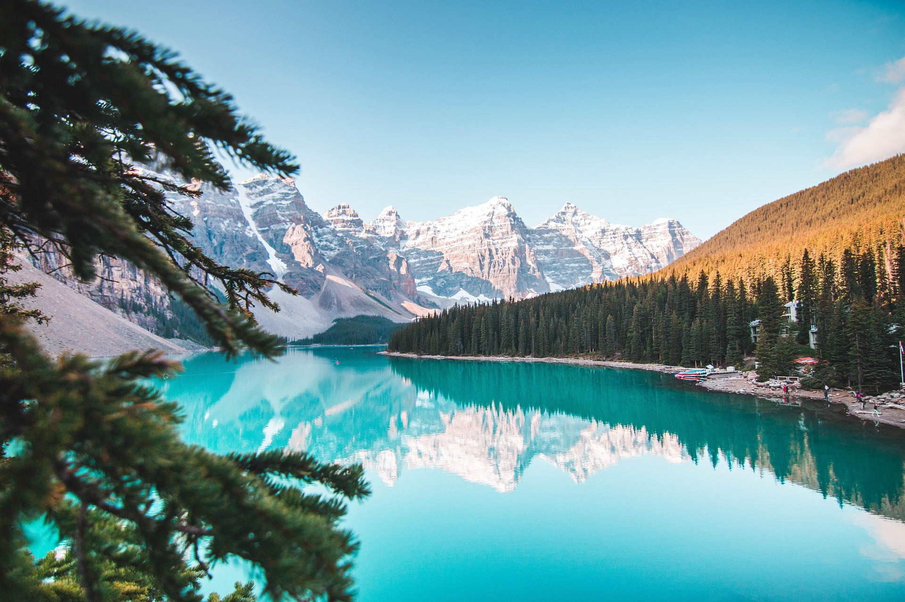

Fire Island is a barrier island off the southern coast of Long Island, New York. It is known for its beautiful beaches, vibrant nightlife, and diverse community. The island is a popular destination for tourists and locals alike, offering a range of activities such as swimming, sunbathing, hiking, and exploring the charming towns.
One of the most popular spots on Fire Island is the Fire Island Lighthouse, which offers stunning views of the surrounding area. Visitors can climb to the top of the lighthouse for a breathtaking panoramic view of the ocean and the island. The lighthouse also has a museum that provides insight into the history of the island and its maritime heritage.
In addition to its natural beauty, Fire Island is also known for its vibrant nightlife. The island has a variety of bars and clubs that cater to different tastes and preferences. Whether you're looking for a lively dance floor or a cozy beachside bar, Fire Island has something for everyone. The island's nightlife scene is especially popular during the summer months when visitors flock to the island to enjoy the warm weather and vibrant atmosphere.
Overall, Fire Island is a fantastic destination for anyone looking to experience the beauty and excitement of a coastal getaway. Whether you're interested in relaxing on the beach, exploring the island's natural beauty, or enjoying the vibrant nightlife, Fire Island has something to offer for everyone. So pack your bags and get ready for an unforgettable adventure on Fire Island!


Discover the hidden gems and exciting activities that Fire Island has to offer. From hiking trails to water sports, there's something for everyone to enjoy.
Visit Fire Island's Official Website